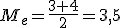

Si suponemos que los datos están ordenados numéricamente de menor a mayor, la mediana es el valor que está en el centro, es decir, el valor que tiene por delante la mitad de los valores y por detrás la otra mitad. La representaremos por Me.
Cuando los datos no están agrupados por intervalos, se procede de la siguiente forma para el cálculo de la Me:
Si el número de valores que tenemos es impar, la mediana será el que ocupe el valor central. Por ejemplo, si el número de personas que viven en los distintos pisos de un bloque de viviendas son:
2, 2, 2, 3, 4, 4, 5, 5, 6; la cantidad mediana de personas que viven en esos pisos sería de 4 personas.
Si el número de valores de los que disponemos fuese par, entonces la mediana es la semisuma de los dos valores centrales. Y no importa que obtengamos un valor decimal, aunque parezca no tener sentido en el contexto. Si en el ejemplo anterior hubiese una vivienda más con tres personas, entonces los valores centrales serían el 3 y el 4, 2, 2, 2, 3, 3, 4, 4, 5, 5, 6 por lo tanto, la mediana sería

Cuando el número de datos es considerable, y por tanto los valores están ordenados en la tabla de frecuencias, el procedimiento consiste en calcular la frecuencia absoluta acumulada. Se divide el número total de datos recogidos (N) entre dos. El primer valor cuya frecuencia absoluta acumulada supera a esa cantidad, es el valor mediano. Esto es debido a que si escribiésemos todos los valores ordenados uno detrás de otro, la frecuencia acumulada nos indicaría hasta qué lugares llegaban cada uno de los distintos valores.
Si la mitad de N coincide exactamente con el valor de la frecuencia acumulada de un valor, estaríamos como en el mismo caso del apartado anterior cuando teníamos un número par de valores. En ese caso, la mediana es la semisuma de ese valor y el siguiente.
Ejemplo
En esta tabla tienes los datos relativos al número de mujeres atendidas en centros de acogida en las 20 ciudades más pobladas de España. Calcula la moda a partir de dichos datos.
| Nº mujeres en centros de acogida (xi) |
Nº de ciudades (fi) |
Frecuencia absoluta acumulada (Fi) |
| 10 |
1 |
1 |
| 12 |
4 |
5 |
| 15 |
3 |
8 |
| 20 |
7 |
15 |
| 25 |
5 |
20 |
Solución
En primer lugar, debemos tener en cuenta el tamaño de la población o muestra, que en este caso en N=20.
Por tanto, N/2 =10. Si observamos la columna con las frecuencias absolutas acumuladas, superados N/2, para el valor de la variable 20, y por tanto Me=20.